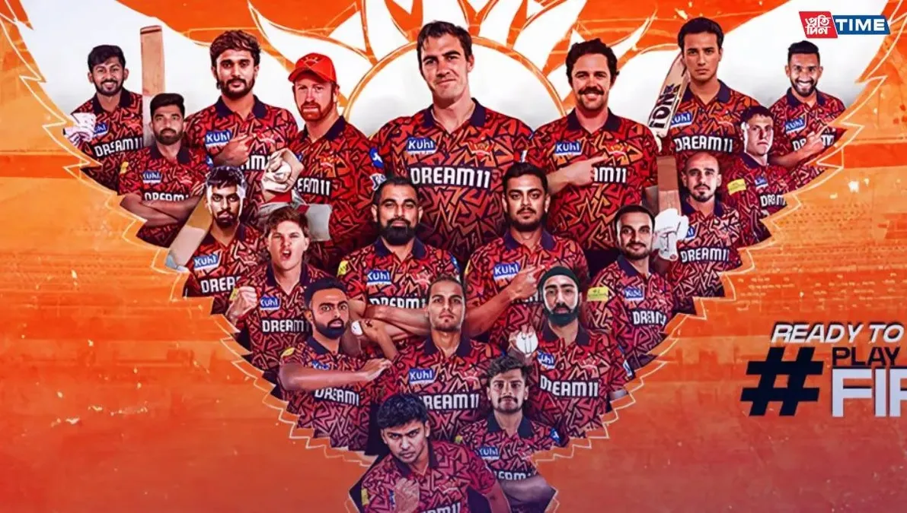

|  |
Full Name: Sun Risers HyderabadCaptain: pat cumminsCoach: Daniel VettoriHome Ground: Rajiv Gandhi International Cricket Stadium, HyderabadIPL Titles: 1 (2016)ManagerSrinath Bhashyam |
|---|
Sunrisers Hyderabad (SRH) is a franchise cricket team based in Hyderabad, Telangana, India. The team was founded in 2012 after the previous Hyderabad-based franchise, Deccan Chargers, was terminated by the Board of Control for Cricket in India (BCCI) due to financial issues. SRH is owned by Kalanithi Maran of the Sun Group. SRH made an impressive debut in the Indian Premier League (IPL) in 2013, reaching the playoffs in their first season. The team is known for its strong bowling attack and has consistently been a competitive side in the IPL. SRH won their first IPL title in 2016 under the captaincy of David Warner, defeating Royal Challengers Bangalore in the final. The team has also been known for its passionate fan base and strong home support at the Rajiv Gandhi International Cricket Stadium in Hyderabad.
NEXT